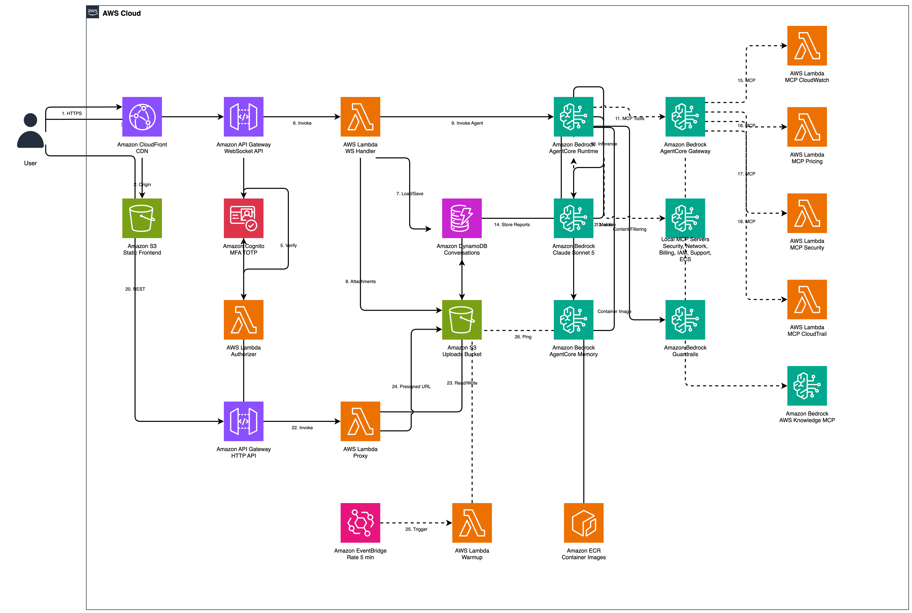

AWS LaunchPad
AI-Powered Cloud Operations Assistant
AI-Powered Cloud Operations Assistant
Análisis integral de postura de seguridad con hallazgos accionables y remediacion guiada.
Visibilidad de gastos, detección de anomalias y recomendaciones de ahorro personalizadas.
Diagnóstico de conectividad, análisis de reglas de seguridad y troubleshooting de red.
Gestión y visibilidad de clusters, servicios, tareas y nodegroups en ECS y EKS.
Métricas en tiempo real, estado de alarmas y análisis de logs centralizados.
Trazabilidad completa de eventos, evaluación de reglas de configuración y alineacion con Well-Architected.

AWS LaunchPad se despliega completamente dentro de la cuenta del cliente. El frontend React se sirve via CloudFront, la autenticación se gestióna con Cognito (MFA obligatorio), y el agente de IA opera sobre Bedrock AgentCore Runtime con mas de 120 herramientas MCP que consultan los servicios AWS en modo read-only.
| Componente | Tecnologia |
|---|---|
| Frontend | React + CloudFront |
| Agent | Bedrock AgentCore Runtime |
| Model | Claude Sonnet 4.6 |
| Tools | 120+ MCP Tools |
| Auth | Cognito MFA (TOTP) |
| Memory | AgentCore Memory + DynamoDB |
| IaC | CDK (TypeScript) |
Zero riesgo de acciones destructivas. El agente solo consulta y analiza, nunca modifica recursos.
Autenticación basada en IAM Roles y STS. No se almacenan access keys ni secrets.
Cognito con TOTP (Time-based One-Time Password). Todos los usuarios requieren segundo factor.
Bedrock Guardrails filtra contenido inapropiado y previene prompt injection.
Toda la información permanece en la cuenta del cliente. Solo las llamadas de inferencia a Bedrock salen de la cuenta.
| Nivel | Usuarios | Mensajes/Mes | Costo Estimado |
|---|---|---|---|
| Bajo | 5 | 500 | ~$7/mes |
| Medio | 20 | 2,500 | ~$35/mes |
| Alto | 50 | 10,000 | ~$140/mes |
Cuatro comandos para tener el asistente operativo en la cuenta del cliente:
# Despliegue estandar (cuenta unitaria)
git clone https://github.com/aws-samples/aws-launchpad.git
cd aws-launchpad && npm install
cdk bootstrap
cdk deploy -c adminEmail=admin@empresa.com -c language=es
# Con visibilidad multi-cuenta (payer + linked accounts)
cdk deploy -c adminEmail=admin@empresa.com -c language=es -c enableCrossAccount=true